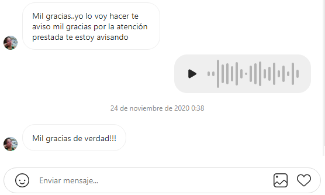
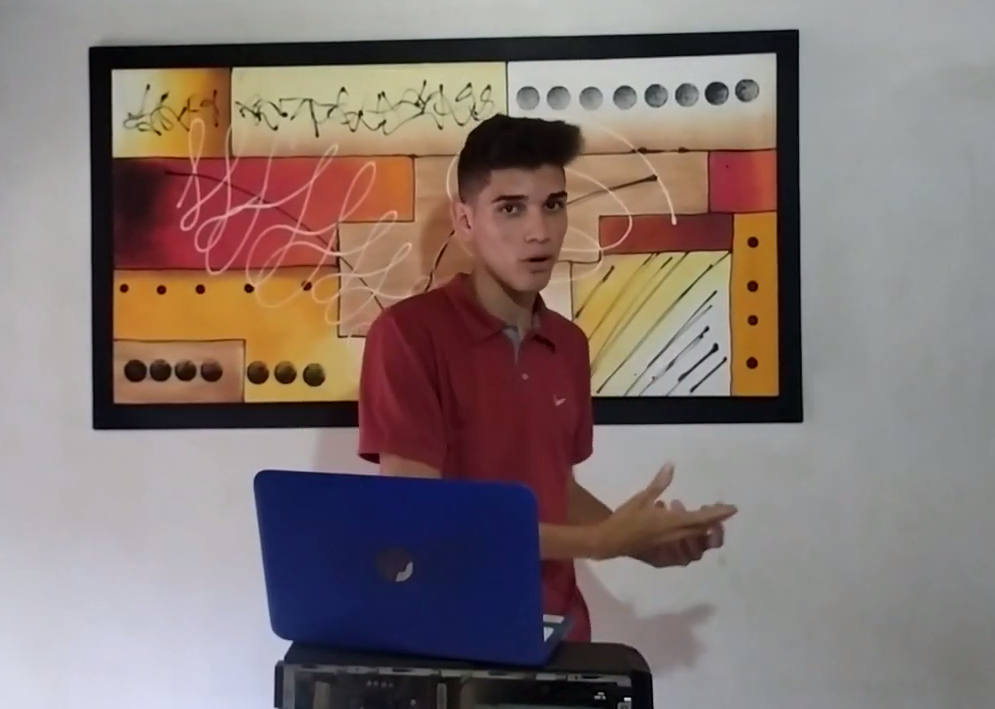

Testimonios



Al principio en el año 2014, fue que descubrí lo que me gustaba cuando por primera vez mi tío abrió la PC del hogar, de una vez súper que esto es lo mío porque la atención fue tan grande que después seguí investigando, y al pasar de los años fui aprendiendo en las computadoras.
Sobre todo cometí muchos errores, ya que no contaba con un curso, además tampoco contaba con una persona que me guiará y me dijera que es lo que tenía que hacer, tuve que hacer las cosas yo solo, buscar los clientes, aprender hablar y sobre todo resolverle el problema, hubo momentos donde tuve problemas con clientes por mis propias decisiones, gracias a esas malas y desagradable experiencia, obtuve experiencia, sobre todo trabajé a empresas grandes que no solo tenía que revisar las computadoras, sino también arreglar el internet, el cableado, las cámaras y aprendí muchas cosas.
Me ha costado un montón, duré 6 años en esto, cualquier persona puede tener conocimiento, sin embargo no todos tienen la disciplina y la motivación necesaria para surgir en algo que a ti te guste tanto como tener conocimientos cómputos, y eso mismo te voy a enseñar, aquí te resumo en poco tiempo los 6 años de experiencia que tuve.
Pase cantidades de veces por esa misma situación, te entiendo, aquí te voy a dar no solo motivación, sino también disciplina porque voy a estar en cada semana apoyándote, sirviéndote y sobre todo comprobando lo que te he enseñado.
Permítanme explicarle Yo aquí no solo te voy a dar PDF, VÍDEOS o WORD, sino también por cada semana vamos a estar en vivo porque yo voy a estar atrás tuyo y comprobar lo que aprendiste en las clases anteriores, es decir que yo voy a programarte citas online por cada cierta semana estaremos en comunicación y evaluaremos como vas aprendiendo.
A lo mejor estarás pensando que el curso que verás son solo vídeos grabados de hace 1 año o meses, pues no, porque yo mismo voy a darte clases personalizadas. Por mi todo dependerá de tus capacidades y conocimientos que tengas, Yo mismo voy a entrenarte.
Lo mejor del caso, si después de los 30 días de entrenamiento si no te sientes satisfecho con los resultados que estás obteniendo, te devolvemos tu dinero.